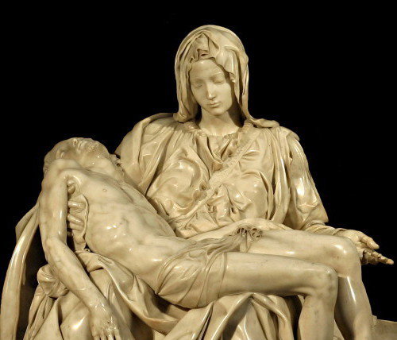

The Madonna della Pietà (Italian: [pjeˈta]; 1498–1499), informally known as La Pietà, is a marble sculpture of Jesus and Mary at Mount Golgotha representing the "Sixth Sorrow" of the Blessed Virgin Mary by Michelangelo Buonarroti, now in Saint Peter's Basilica, Vatican City. It is a key work of Italian Renaissance sculpture and often taken as the start of the High Renaissance.
The sculpture captures the moment when Jesus, taken down from the cross, is given to his mother Mary. Mary looks younger than Jesus; art historians believe Michelangelo was inspired by a passage in Dante Alighieri's Divine Comedy: "O virgin mother, daughter of your Son...your merit so ennobled human nature that its divine Creator did not hesitate to become your creature" (Paradiso, Canto XXXIII). Michelangelo's aesthetic interpretation of the Pietà is unprecedented in Italian sculpture because it balances the Renaissance ideals of classical beauty with naturalism.

Black – #000000
dotVERY DARK GRAY – #191919
dotDark Gray – #333333
dotMedium Gray – #666666
dotLight Gray – #C2C2C2
dotLighter Gray – #EBEBEB
dot